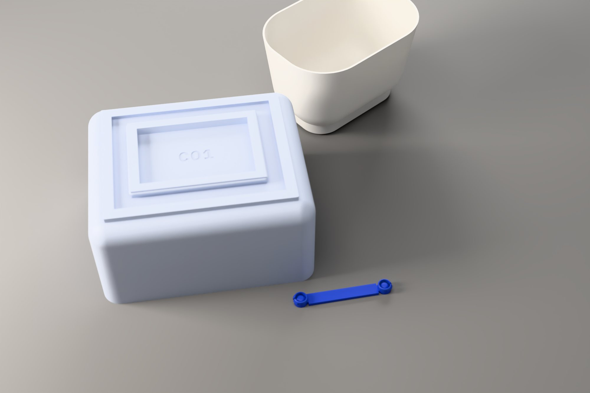
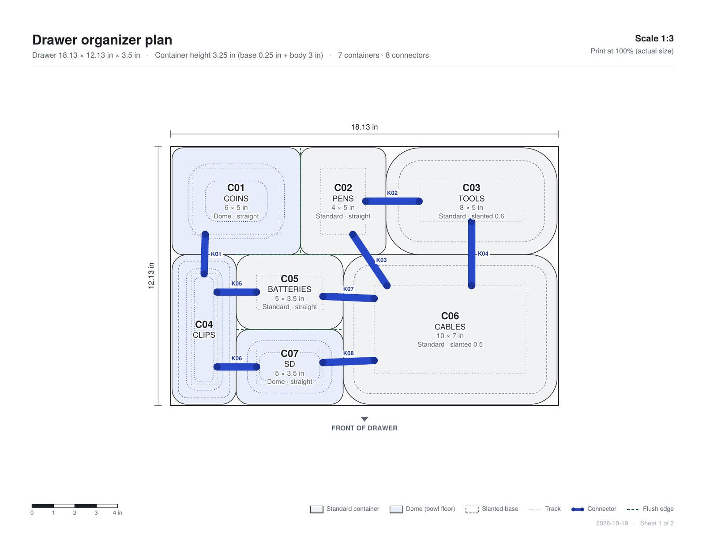

A coin and four corners undo the camera
A phone photo of a drawer is a perspective projection: parallel edges converge and a round coin looks like an oval. Projective geometry reverses it. The four floor corners define a homography, a 3 × 3 matrix that maps the photographed floor back onto a flat unit square.
Once the floor is flat, the only distortion left is that its width and depth were squeezed into the same unit. A circle on the floor therefore becomes an axis-aligned ellipse, and its two radii say exactly how much: W = d / 2a and D = d / 2b, with d the coin's known diameter.
The coin's rim is found by colour, not brightness: rays from the tapped centre walk outward until pixels match the floor's chromaticity, which survives shadows. An ellipse is fitted to the hits by least squares, the worst quarter dropped, and fitted again.
rim → H−1 → fit A x² + C y² + D x + E y = 1 → W = d / 2a, D = d / 2b
Five ways to cut a floor into containers
The generator solves a constrained space-partitioning problem. The drawer floor has to be covered completely, by exactly n rectangles, none smaller than 3 × 3 in, with every edge on a 0.5 in grid so containers line up and remain easy to edit.
Each layout is a guillotine partition: a cut runs across the whole remaining rectangle, splitting it in two, and each half is cut again recursively. Five strategies choose the cuts differently: an even grid, columns, rows, one large container with small ones, and a mixed recursion that picks the axis and count at random.
Randomness comes from a seeded generator (Mulberry32), so Regenerate gives five new layouts while any one stays reproducible. Every candidate is checked: no overlaps, every container at least 3 in, and areas that add up to the floor. Before a cut is made, a capacity test (⌊w/3⌋ · ⌊d/3⌋ ≥ n) rules out halves that could never fit their share.
Rims tile the drawer; everything else is derived
The user edits each container's rim, the outline seen from above, because rims are what must tile the drawer. Every other dimension follows from the parameters: the base is the rim pulled in by the wall slant, the blend rounds the corners and the wall-to-floor curve with one radius, and one wall thickness, 1.5 mm by default, shells every container. Heights count down from the drawer: the 1/4 in track base and the body together fill the drawer's height less 1/4 in of headroom.
A Dome container keeps the same outside but its floor is a bowl, so small parts slide to the middle and can be scooped out. The bowl is the Project 01 dome curve turned upside down: a degree-5 Bézier profile that leaves the wall steeply and flattens to zero slope at the centre.
Constraints keep the parameters honest: slant is capped so the base stays ≥ 2.3 in wide for its track, blend is capped at 45 % of the base and the height, and the bowl is never so shallow that it cuts through the blended outer wall.
z(s) = zE − b · Q(s/2) / Q(½), Q = Bernstein degree 5, c = [0, F, 1, 1, F, 0], F = 1.8

A graph of neighbours, joined on the shortest line
Containers with straight walls sit flush and hold each other in place. Slanted walls leave a gap between bases, so those neighbours need joining. The tool builds an adjacency graph from the rims: two containers are neighbours when they share at least 0.75 in of edge, and an edge needs a connector when either side is slanted.
Under every base runs one closed track: an outer wall, a 0.5 in channel and an inner wall, each an inward offset of the base outline. A connector is two snap buttons and a strap. Its buttons sit on the shortest line between the two facing channels: straight across the overlap of the two sides when they share one, otherwise diagonally between their nearest ends.
Rules on the graph: every side that meets a neighbour keeps at least one connector, two buttons on one side stay 1.25 in apart (room for their spring arms), and a button stays 0.6 in clear of a corner, and a strap may pass under any outer wall (the slit runs all the way round) but never into a third container's inner wall.
Letters cut into a watertight mesh
Every part is debossed 0.5 mm deep with its tag and nothing else: C01 under a container, K03 under a connector strap. Names stay on the plan and in the file names, where they can change without reprinting. The letters come from IBM Plex Mono Bold, stored as polygons, and are mirrored so they read with the part turned over.
Cutting text into a mesh without a CAD kernel is a geometry problem. The underside face becomes a polygon with a hole for every letter; it is split into triangles by ear clipping with hole bridging (earcut), each letter gets a ceiling 0.5 mm up, and walls join the two. A letter's counters, the inside of an O or an A, stay at the surface as islands.
A mesh only prints if it is closed: every edge shared by exactly two faces, in opposite directions. Letters that share a baseline put many vertices on one exact line, which can trip the triangulator, so each vertex is moved by a few millionths of an inch first. 700 random labels in the test suite all come out closed.
Underside face, triangulated around the letters
A snap fit, not a wedge
Each part leaves as a binary STL in millimetres, named by number, name and size. Containers print rim-down: the open top sits on the bed and the underside, with its track and label, is printed last as a crisp top surface. Standard containers need no supports; a Dome needs a little under the flat middle of its bowl.
A connector has to click in, not be forced in. Its button has a core with a rounded top that finds its own way into the channel, then slides between the track's beads with 0.01 in to spare, so it never binds. Two spring arms, 0.9 mm thick, run along the channel from the core, one toward each wall, and end in small hooks. Pressing a container onto the button, the bead rides down each hook's 30° lead-in and pushes the arm in by 0.64 mm; past the bead, the arm springs back and the hook sits above it.
The arm is a cantilever: for a bending deflection δ, the peak strain is ε = 3δt / 2L². With t = 0.9 mm and a free length L = 9.7 mm, the snap strains the plastic about 0.9 %, well inside what PLA and PETG take repeatedly. The arms run along the channel rather than standing up, so they are long even though the track is only a quarter inch tall; they print standing free on the bed, so nothing ties them down.
One button in its channel, from above
to scale · 1 in = 330 pxThe hooks reach 0.025 in past the bead crests (dashed). Pressing in, each arm bends toward the core; once past, it springs back and the hook rests on top of the bead.
Section through a hook
Snap strain by arm length
Section across the gap: strap under both outer walls
to scale · 1 in = 165 px| Feature | Value | Why |
|---|---|---|
| Core vs bead crests | ⌀ 0.38 / 0.40 in | 0.01 in each side: the button slides along the channel and never wedges. |
| Spring arm | 0.9 × 9.7 mm | Bends 0.64 mm to pass the bead at about 0.9 % strain. |
| Hook | 0.025 in past the bead | 30° lead-in on top cams the arm in; a 45° face below lets the part be pulled off again. |
| Seated play | 0.01 in | The hook sits just clear of the bead, so nothing is preloaded. |
| Arm direction | away from the strap | The outer arm points away from the way a diagonal strap leans, so the strap never runs along it. |
| Strap vs slit | 0.098 / 0.1 in | 0.002 in less than the slit, so it passes under the outer wall. |
| Snap bead | r 0.05 in | Whole on the inner wall, upper half on the outer wall over the slit. |
| Wall and floor | 1.5 mm · 0.8–3 | One slider for every container. 1.5 mm is three or four perimeters at a 0.4 mm nozzle: stiff, light, quick. |
| Label depth | 0.5 mm | Two or three layers: legible, and the floor keeps 1 mm. |
| Fit gap · headroom | 1/16 in · 1/4 in | The organizer drops into the drawer, and the drawer still closes. |
| Height | base + body | The 1/4 in track base counts toward the drawer height you enter: base + body = drawer height − headroom. |
One layout file, six groups of components
The system began as a Grasshopper definition: one container, its tracks and one connector, driven by sliders. To run it for any layout, every block was made to work per container. A layout.json exported by the web tool is read once, each container is grafted onto its own branch of a data tree, and the original chains run for all of them at once.
The web kernel and the definition follow the same rules, so they act as a check on each other: the app's 5 × 5 in Dome in a 4 in drawer measures 127 × 127 × 95.25 mm, and matching bounding boxes mean the two agree.
Where the original definition used fixed indices (fillet edges 0 2 6 7 8 9 10 11, shell face 1), the per-container version picks by geometry instead: bottom edges by midpoint height, the top face by centroid. Indices change whenever a loft does.
File Path → Read File → Python 3 Script unpacks base planes, sizes, draft, blend, bowl and track offsets from layout.json; Graft puts each container on branch {i}.
Rectangle (radius = blend) → Move up → Offset by the draft → Loft → Cap Holes → Fillet Edge on the bottom edges. Standard: Shell 1.5 mm. Dome: loft the bowl's sections from the Bézier curve and Solid Difference the cavity; Stream Filter picks per branch.
Four inward Offset curves of the base → Boundary Surfaces → Extrude → Solid Difference with the body so the walls meet its underside; Pipe the beads, cut the slit all the way round, Solid Union with the body.
At each point a Cylinder core, two arm Boxes oriented along the channel, and hooks as an Extruded section; strap as Rectangle 3Pt → Extrude → Solid Union. Without the app, Curve Proximity between two facing centre lines finds the same shortest line.
Curve.CreateTextOutlines in a Python component, mirrored and placed from the label's centre and angle → Boundary Surfaces → Extrude 0.5 mm → Solid Difference.
Centre each part at the origin, Scale by 25.4 (the model is in inches, slicers read millimetres), bake with names, one STL per part.
Everything the printer and the drawer need, in one ZIP

The algorithms, in order
- Homography from four points
Square-to-quad projective map (Heckbert) from the corner pins; its inverse rectifies every rim point.
- Rim by chromaticity
Coin and floor colours sampled as normalised RGB plus a little brightness; rays stop after four floor-coloured samples in a row.
- Robust ellipse fit
Linear least squares for an axis-aligned conic, then the worst 25 % of points dropped and the fit repeated.
- Guillotine partition
Recursive straight cuts with a capacity test, grid snapping and five strategies, seeded by Mulberry32 so each layout can be reproduced.
- Offset profiles
Each container is a sweep of rounded-rectangle rings along its wall profile; the inner surface is that profile offset by the wall thickness.
- Bézier bowl
The degree-5 Bernstein curve from Project 01, halved, normalised and inverted; sections crowd where it is steepest.
- Adjacency and shortest lines
Shared rim edges form the neighbour graph; connector points come from the overlap of facing channel centre lines, or their nearest ends.
- Cantilever snap fit
Spring arms sized by ε = 3δt / 2L²: long and thin along the channel, so a 0.64 mm snap stays under 1 % strain.
- Text to triangles
Font outlines as polygons, mirrored, triangulated by earcut with holes, then closed into pockets and checked edge by edge.
- Binary STL and vector PDF
Both written in the browser with no libraries: STL triangles scaled to millimetres, and a two-sheet PDF in Helvetica at a printed scale.
- Grasshopper per container
The same rules as data trees: one branch per container, geometry picked by position rather than index, layout.json as the shared source.
Credits. Concept, form logic and the Grasshopper definition by Dhyey Acharya. The web tool and its geometry kernel were developed with the assistance of Claude, translating the .ghx definition into JavaScript. The hero images are Cycles renders of meshes exported by that kernel.
Measure a drawer and print an organizer for it.
Open the tool